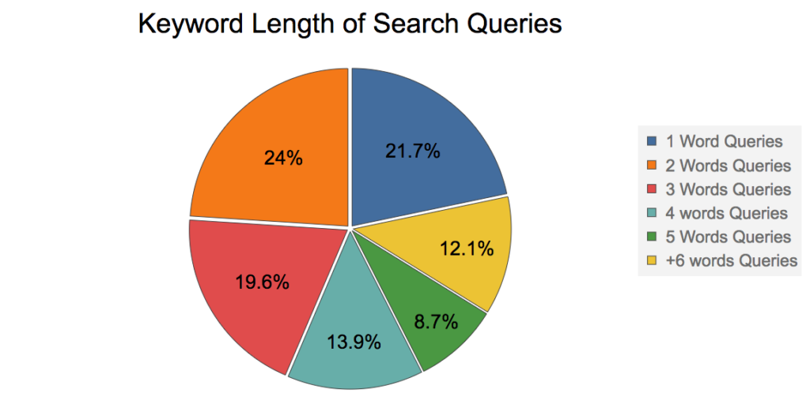
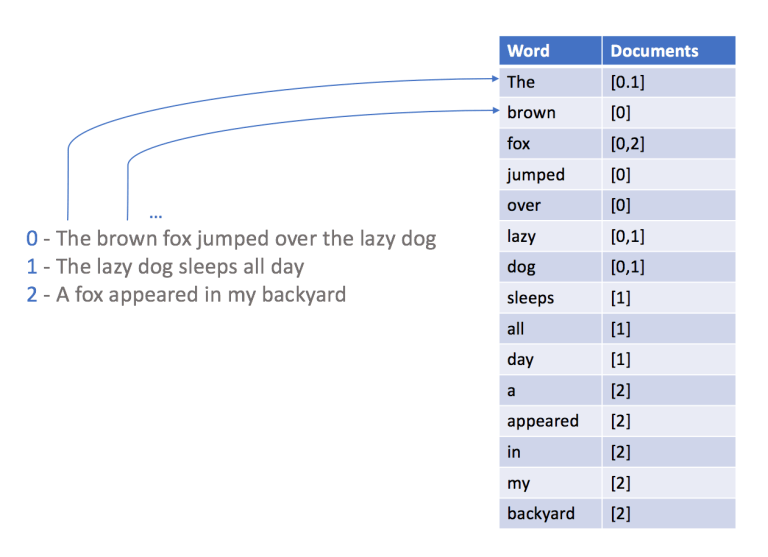

Full-Text Search
Tips & Tricks
Created by Denis Rosa and brought to you by Couchbase
About @deniswsrosa
- Developer Advocate at Couchbase
- Bleve enthusiast
- +18 years as a Developer
- Had my own SEO startup
- Heavy user of Solr in the past
github.com/deniswsrosa/couchflix
github.com/couchbase-examples
Agenda
- Code, code, code! (pray for the demo gods!)
- Few slides to explain core concepts
Select * from movies where title like “Dark Knight%”
Select * from movies where title like “%Dark Knight%”
Select * from movies where LOWER(title) like LOWER(“%Dark Knight%”)
- Handle typos
- Search in multiple fields (director, description)
- Best results should be on the top of the list
That is why you need a Search Engine
Adding a Search Engine can be painful
- Increase cost with servers
- Increase infrastructure complexity
- Code changes / Data Sync
- The feature might not worth all the extra effort
CB Full-Text Search
Both Couchbase CE and EE already have a Search Engine internally called Bleve. All you need to do is to create your index and start using it.Search
It is NOT JUST about matching a text.
Search is heavily conversion-oriented.
- Netflix: Convince you to watch movies/series
- Google: Answer your question
- Amazon: Show products you want to buy
how users search
Don't forget to save user's queries!
Core Concepts
Inverted Indexes: Core Concepts
- Score: A number which is calculated according to how close the result is to the target term
- TF/IDF: Rare words score higher
- Edit Distance: minimum number of operations required to transform one string into the other: Star -> Start
- Pivoted Length Norm: Matches in small texts will rank higher then long ones
Let's start!
Shingle
"Star Wars Daisy Ridley"
Star WarsWars Daisy
Daisy Ridley
Stemming
fishing, fished, and fisher --> fish
Ranking Factors
- Google: Title, URL, Content, Backlinks, +350 items
- Amazon: Description, Specifications, Photos, Customer Satisfaction, Conversion Rate
- Bing: Title, URL, Content, Backlinks, etc
Types of Ranking Factors
- Standard: general data about the item
- Signals: how often users choose this result?
- Personalization: which genres the user likes?
Plan Your Ranking Factors and Weights. Ex:
- Title: ~30%
- Description: ~15%
- Actors: ~20%
- Directors: ~15%
- Release Year: -15% to +10%
- Popularity: -10% to +10%
- Ratings: ???
Release Year
There is a big difference between a movie released in 2022 to a movie released in 2020. But, do we care if a movie was released in 2004 or 2000?Decay Funcs &
Gaussian Decays

Recommender Systems Specialization
Coursera

Bleve
We can emulate decays by building boosting ranges.
private DisjunctionQuery boostReleaseYearQuery() {
LocalDateTime now = LocalDateTime.now();
//movies older than which are up to 3 years old get a boost of 10%
NumericRangeQuery rangeQuery = SearchQuery.numericRange().field("release_year").boost(1.25);
rangeQuery.max(now.getYear());
rangeQuery.min(now.getYear()-4);
//movies which are from 4 to 8 years old, nothing will be slightly penalized
NumericRangeQuery penalizationQuery = SearchQuery.numericRange().field("release_year").boost(1.05);
penalizationQuery.max(now.getYear()-5);
penalizationQuery.min(now.getYear()-8);
//movies which are from 8 to 18 years old, nothing will be penalized in 10%
NumericRangeQuery penalization1Query = SearchQuery.numericRange().field("release_year").boost(0.90);
penalization1Query.max(now.getYear()-9);
penalization1Query.min(now.getYear()-18);
//movies which are from 8 to 18 years old, nothing will be penalized in 10%
NumericRangeQuery penalization2Query = SearchQuery.numericRange().field("release_year").boost(0.87);
penalization2Query.max(now.getYear()-19);
penalization2Query.min(0);
DisjunctionQuery yearDisjunction = SearchQuery.disjuncts(rangeQuery, penalizationQuery, penalization1Query, penalization2Query );
return yearDisjunction;
}
N1QL - User Defined Function
select m.original_title,
rankMovie( SEARCH_SCORE(), m.release_year, m.popularity, m.weightedRating) AS score
from movies m where search(m,
{ "size":40, "sort":["-_score"], "query": {
"should": {
"disjuncts": [
{ "disjuncts": [
{"field":"original_title", "match": "Star War", "boost": 1.4},
{"field":"original_title", "match": "Star War", "fuzziness":1, "boost": 1.4}
]
},
{ "disjuncts": [
{"field":"overview", "match": "Star War"},
{ "field":"overview", "match": "Star War", "fuzziness":1}
]
}
]
}
}}
)
and m._class = "com.cb.fts.sample.entities.Movie"
order by score desc
limit 20
Ratings???
vs
A movie with 3500 votes and 3.8 stars
p: Average rating of the movie from 0 to 5
q: Number of votes of the movie
Q: Average number of voter per movie
Ex:
- Robot Chicken: 68 Votes, 6.9 Avg rating = 1.725
- Rogue One: 5111 Votes, 7.4 Avg rating = 6.85
- Star Wars: 6778 Votes, 8.1 Avg rating = 7.025
Plan your Business Rules
Ex: promoted = true
How can I add dynamic filters?
Understanding the user intent is key
What if we also want to search for the name of the actor/actress?
Taxonomies / Entity Extraction
Solr Text Tagger
Azure Cognitive Services, etc
Tests
The Cranfield Evaluation Method is a good strategy to implement tests
Use Precision & Recall as a metric.
Check out the Text Retrieval course on Coursera.
Black Hat
Be careful with features that are directly influenced by users:
Further reading
- Bleve: blevesearch.com
- Relevant Search: With Applications for Solr and Elasticsearch
- Taming Text: How to Find, Organise, and Manipulate it
- Solr in Action
- Couchbase: couchbase.com
Thank You
@deniswsrosa